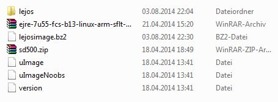
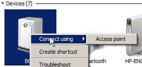
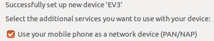
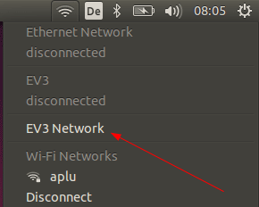
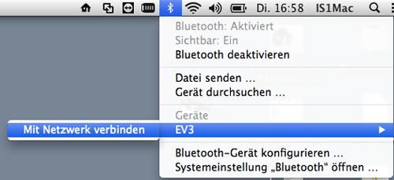
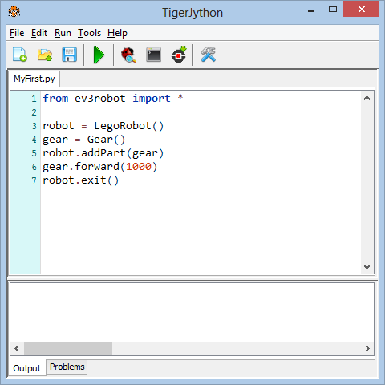
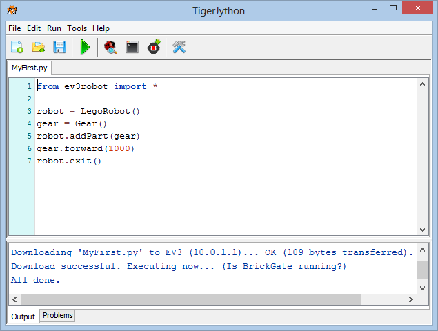
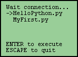

EV3 Installation
1 Create the leJOS bootable SD card
By default the EV3 bricks starts the Lego menu application. To get access to the Linux file system and execute Python scripts or Java byte code, it is necessary to configure a special SD card and insert it into the SD card slot. If the card present, the EV3 boots the leJOS menu application instead of the Lego menu. If you remove the card, the brick starts again with the Lego menu. Proceed as follows to create the leJOS SD card:
- Provide an empty Micro SD card with minimum 4 GB and maximum 32 GB
- Insert the card into a card reader
- A new SD card contains normally a single empty FAT32 primary partition. If your card was already in use, you should check with a disk management tool, if the card is FAT32 formatted and contains a single empty primary partition. (A card already used for leJOS contains a 500 MB FAT partition. The remaining space is Ext2 formatted and contains the Linux file system. Under Windows the free MiniTool Partition Home Edition is a good choice to remove all partitions and create a single FAT32 primary partition.)
- Download the file ev3sdcard.zip (approx. 70 MB), unpack it and copy all files and directories to the SD card. You must see the following files:

2 Boot EV3 with leJOS
- Insert the SD card into the EV3 card slot (labeling upside) and press the turn-on button
- After a short while the leJOS start screen is displayed. If instead the Lego menu is shown, you did not properly configure the SD card. Check if the partition is 4 - 32 MB FAT32 (primary) and if all files/directories are present
- Now the SD card is automatically repartitioned. This may last some 20 minutes, so be patient. After the initializing process the EV3 emits a sound and displays the leJOS menu. From now on, you let the SD card inserted in the card slot
- Turn the EV3 off and reboot it. It now starts much faster.
3 Connect to the EV3
All connections to the EV3 use the TCP/IP protocol, but the physical transport channel may be USB, Bluetooth or WLAN. When booted with leJOS, a Linux Secure Shell (SSH) server with Secure Copy (SCP) is started (but no SFTP server). The EV3 replies also to ping requests. Ping is the easiest way to check if the IP link to the EV3 is working. The default IP address (for Bluetooth and USB) is 10.0.1.1 as seen on the leJOS start screen.
You may connect your PC via USB, Bluetooth or WLAN. Bluetooth is the recommended connection method because you don't need a cable nor a WLAN adapter. (Consult the APLU site to get information how to connect via USB or WLAN). The Bluetooth Personal Area Network (PAN) protocol is used to establish an IP connection via Bluetooth.
To enable IP over Bluetooth, the EV3 must act as PAN server. Proceed as follows:
Bluetooth PAN under Windows:
- After the pairing is performed (and each time the EV3 is turned on), the EV3 must be made active as IP Access Point. In Devices and Printers right click the EV3 symbol and select "Connect using > Access point".
|
 |
Bluetooth PAN under Linux (Ubuntu):
- In the Bluetooth Setting you must enable the checkbox "Use your mobile phone as a network device (PAN/NAP)"
|
 |
- After the pairing is performed (and each time the EV3 is turned on), the EV3 must be made active as IP Access Point. In the Network Icon Menu click the EV3 Network. After a while a confirmation box is shown.
|
 |
Bluetooth PAN under MacOS:
- Click the Bluetooth icon and perform a Bluetooth device search. Pair the EV3 while ignoring the passkey. In the Bluetooth control panel the EV3* will be shown as not connected.
- Click the Bluetooth icon and move the cursor to the EV3 entry. Select the "Connect to network" option.

|
|
You can change the robots friendly Bluetooth name in the EV3 menu under System - Change name. To enter a new name, move the cursor block using the cursor keys. Confirm each letter by pressing Enter. The new name is displayed at the bottom of the screen. (The letter U stands for uppercase, l for lowercase, X for delete and D for done.) To finish the modification, move to D and press Enter. Then reboot the EV3 to make the name active. There is no other action needed on the EV3 to establish the IP connectivity over Bluetooth.
4 Start/Update the BrickGate server
Python scripts executed on the remote PC or locally under the EV3 Python interpreter access the Lego hardware via BrickGate, a TCP/IP gateway running on the EV3. BrickGate is started from the leJOS menu like any other leJOS program. It's main purpose is to interpret commands from a Python client, but it also displays a menu to start Python scripts autonomously.BrickGate is part of the SD card distribution. If you make it the Default Program, it can be started with one click each time the EV3 boots.
If accidently you delete the BrickGate program or you want update it, download the latest version from our Webserver and install/replace it automatically by clicking the following link. Make sure that your PC is connected to the Internet and the Bluetooth link to the EV3 is established.
Download BrickGate
The WebStart requires the installation of the JRE and the WebStart browser plugin. (Under Linux consult the appendix to see how to install them.) When started, a security warning is shown. The WebStar is signed by Comodo for ACE information technology AG, (Switzerland) and does not pose a risk.
5 Write you first program and execute it in direct and autonomous mode
- Start TigerJython
- Click menu icon Preferences, select register card Library and check Enable EV3-Download and Run after download

- Close TigerJython and restart it. You now see an additional icon symbolizing the EV3 buttons in the icon bar
- Write a short program MyFirst using the EV3 gear object:

- Execute the Python script in direct mode: Just click the green Run icon. A dialog opens that requests the IP address of the EV3 brick. Accept the default value 10.0.1.1 by pressing OK. The remote PC sends commands via TCP/IP to the BrickGate server that pass them to the leJOS system. The EV3 plays a connect melody and the vehicle moves for 1 second. Then you hear the disconnect melody.
- Execute the Python script in autonomous mode: Click the Download to EV3 icon. You see a confirmation message in the output window and the scripts starts automatically. The local script still communicates with the BrickGate server, but uses now a local (internal) link (localhost). Again the EV3 plays the connect melody, moves forward and plays the disconnect melody.

The script is now stored in the Brick's Linux file system (in /home/python/scripts) and you see it immediately in the the BrickGate menu. Move the arrow with the Up-Down buttons, so it point to the script name you want to execute. Then press the Enter button. The script executes again, even if the brick is disconnect from the PC.

Because no error messages are shown in autonomous mode, you better test your script in direct mode first. But if a local script causes your EV3 to block or lasts too long, you may stop it any time by pressing the Down+Enter key combination. This will stop the BrickGate server too and you must restart BrickGate (but not the EV3!) to execute another script.
(If you want to explore your EV3 Linux operating system and use the Python interpreter (or Java) in a SSH shell, you find more information here).
Appendix: Installation of the JRE and the WebStart browser plugin under Linux (Ubuntu)
In a terminal execute the following commands:
sudo add-apt-repository ppa:webupd8team/java
sudo apt-get update
sudo apt-get install oracle-java7-installer |